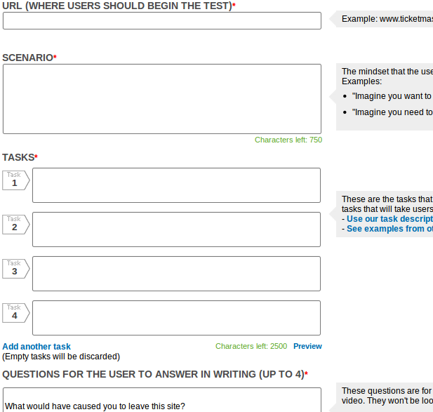
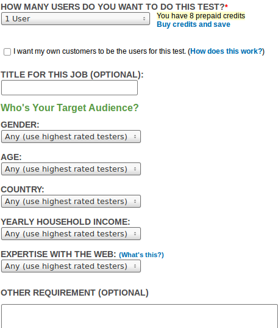
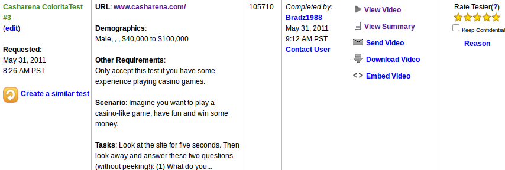

./ui exists. Not copied.
<!DOCTYPE html>
<html lang="en">
<meta charset="utf-8">
<meta name="generator" content="rst2slides 0.2.2" /><title></title>
<link rel="stylesheet" href="ui/styles.css" />
<link rel="stylesheet" href="ui/pygments_style.css" />
<link rel="stylesheet" href="ui/user.css" />
</head>
<body>

    <header>
    <nav>
        <ul>
            <li><button id="prev-btn" title="Previous slide">Previous Slide</button></li>
            <li><span id="slide-number"></span>/<span id="slide-total"></span></li>
            <li><button id="next-btn" title="Next Slide">Next Slide</button></li>
        </ul>
    </nav>
    </header>

<div id='deck'>


<section>
<hgroup>
    <h1>
UserTesting.com    </h1>
</hgroup>

  </section>

<section>
<hgroup>
    <h1>
New Test - What    </h1>
</hgroup>

  </section>

<section>
<hgroup>
    <h1>
New Test - Who    </h1>
</hgroup>

  </section>

<section>
<hgroup>
    <h1>
Result    </h1>
</hgroup>

  </section>
</div>


        <script src="ui/jquery-1.4.2.min.js"></script>
        <script src="ui/htmlSlides.js"></script>
        </body>
</html>
